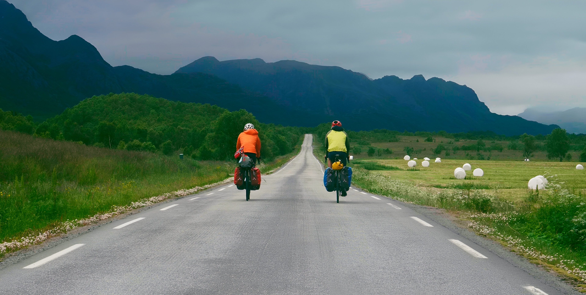

L'Odyssée Nordique
Reprendre la route
Bande-annonceFilm Documentaire - Voyage à vélo et mobilité cyclable
Une aventure humaine au cœur des paysages nordiques
Partis pour un voyage de plusieurs mois à vélo, en quête d’évasion et de retour à l’essentiel, notre route est ponctuée de rencontres avec des passionnés impliqués pour une Europe plus cyclable. "L'Odyssée Nordique : Reprendre la route" est le récit de cette épopée vers le grand Nord, proposant d’embrasser la lenteur et la sobriété.